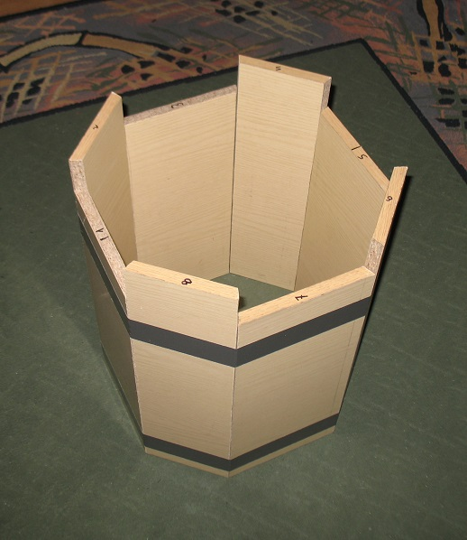
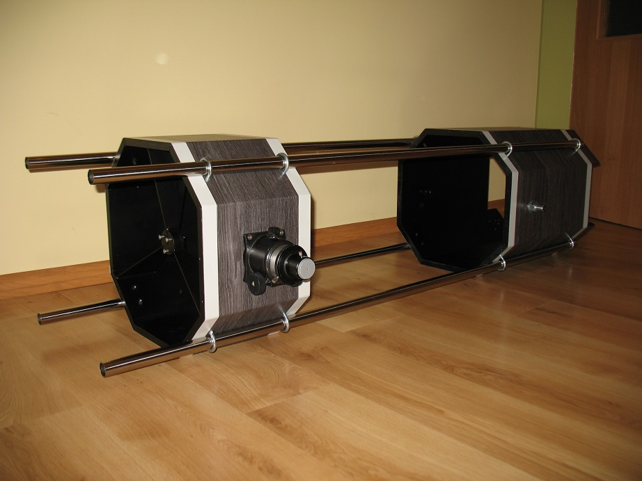
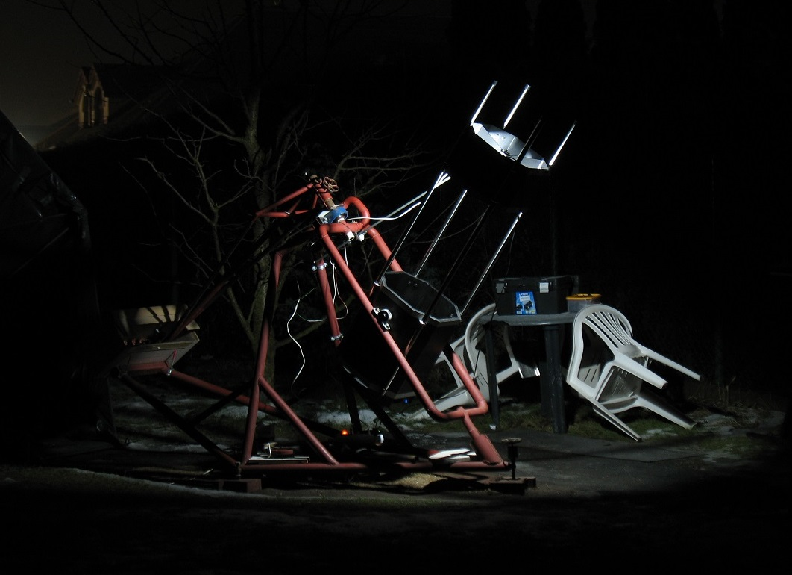

.
SAMODZIELNA BUDOWA TELESKOPU ASTRONOMICZNEGO
|
Posiadając już teleskop 305/1500 w pełnej tubie (rurze) zakupiwszy optykę 320/1500 postanowiłem dla odmiany kolejny zbudować w systemie kratownicowym (Trus) Planowanie i budowa zajęły mi kilka dni, wszystko wykonywałem ręcznie. Skrzynie górna i dolna powstały z pociętych na odpowiedni wymiar i pod odpowiednim kątem płyt wiórowych ze starych mebli (obecnie produkowane płyty są marnej jakości i swoją wytrzymałością stanowią jedynie cień tego co produkowano w PRL-u) Całość została posklejana klejem meblarskim Wikol. Jako ramę zastosowałem cztery cienkościenne rury mocowane do skrzyń cybantami. Mimo NIEzastosowania konstrukcji krzyżowej, dającej z natury najsztywniejszą formę połączeń, konstrukcja ( użytkowana już od kilku lat ) potwierdziła swoją sztywność.
Skrzynia dolna - lustra głównego. .  Teleskop w procecie konfiguracji. Ustawiania miejsca ogniskowania względem wyciągu okularowego itp. .  Gotowy teleskop Newton Trus 320/1500 w akcji na samodzielnie zbudowanym montażu .  
|